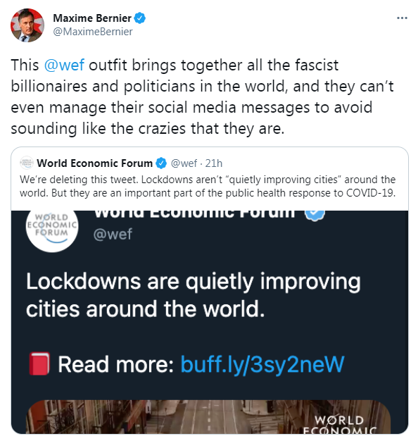

Meet the PPC - Maxime Bernier
February 27th, 2021
For those of you who don't know, Maxime Bernier is the leader of a tiny political party in Canada, the People's Party of Canada. He was a lifetime Conservative Member, was on the fast track to leadership, when the election was stolen from him. Then he got squeezed out of the party, they really love doing that, and started the PPC. I've called him Maxime "Boomer Chad" Bernier before, and honestly I'll stand by that. I don't think he's a bad guy, but everything you need to know about him can be summed up in one tweet.

 Yeah guys I'm sure that jew Mark Zuckerberg was just sitting around, ready to give the goyim moneybag after moneybag, when he noticed a Joseph "The Broseph" Goebbels mixtape lying around just waiting to be played. He's a nazi now, which is why he supports these arbitrary COVID restrictions that are designed to destroy small businesses and allow the Zuckerbergs of the world to buy up their assets for pennies on the dollar.
Yeah guys I'm sure that jew Mark Zuckerberg was just sitting around, ready to give the goyim moneybag after moneybag, when he noticed a Joseph "The Broseph" Goebbels mixtape lying around just waiting to be played. He's a nazi now, which is why he supports these arbitrary COVID restrictions that are designed to destroy small businesses and allow the Zuckerbergs of the world to buy up their assets for pennies on the dollar.
 Maxime Bernier: Almost Useful.
Maxime Bernier: Almost Useful.

Yeah guys I'm sure that jew Mark Zuckerberg was just sitting around, ready to give the goyim moneybag after moneybag, when he noticed a Joseph "The Broseph" Goebbels mixtape lying around just waiting to be played. He's a nazi now, which is why he supports these arbitrary COVID restrictions that are designed to destroy small businesses and allow the Zuckerbergs of the world to buy up their assets for pennies on the dollar.
Maxime Bernier: Almost Useful.